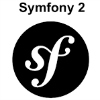
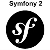

All your fantasy sports info in one place.
Last summer I worked alongside a couple of engineers to build out a site called Rotorobot.com. The idea behind the site was to create a way for people to quickly and efficiently create winning daily fantasy sports lineups. The site was about more than just bombarding users with stats and graphs: the goal was to use our software engineering skills to give those people who don't have hours to play an actual chance against the sharks.
What I worked on:
Data is delicious.
My first job was working on the backend portion of the site and writing PHP scripts to automatically keep our database up to date with the latest fantasy sports information.
By working with so much data, I became familiar concepts that go into database modeling, and the power that comes from pairing data the right way.
Optimization is key.
After realizing how much data we had available we decided it was time to see what we could do with it. I worked with another engineer to build a Nodejs backend that housed a lineup optimizer. The optimizer allowed the creation of lineups optimized on specific metrics.
Let's build some lineups.
Another portion of the site I built was an interactive lineup builder that allowed users to test lineup combinations while adhering to Fanduel rules and regulations. Having spent the earlier part of the summer writing unit tests for a large scale Angular JS project, I decided to put my new-found angular knowledge to good use, and implement the lineup builder with Angular Js.
After the lineup builder was built the Nodejs backend was integrated into it, allowing users to create optimized lineups on the metrics of their choice. In addition, we gave users the ability to partially fill a lineup with specific players and then fill out the remainder of the lineup with optimal choices.
For the Lazy folks.
Recently I created a free lineup service for the site that would integrate directly into the Nodejs backend. Users can sign up to receive daily lineup emails containing an optimized lineup for the current night's DFS contests. Whether you're a new player starting out, or someone that just wants a little bit of help getting started, this service is a simple way to get yourself in the game.
One of our free lineups!

This is an image of one of our free lineups. I replicated the CSS on the Fanduel site and used it to create a template that we could fill with data and send out to our email list.
Comming Soon!
Rotorobotfx


For the past couple weeks I have been working with a senior engineer on a project called Rotorobot-Fx. We want to create an internal development environment enabling people to interact directly with our data in order to develop their own algorithms for daily fantasy sports.
The images above are of one of the working prototypes that I've created so far. In order to give the prototype a natural look and feel I replicated the CSS available for the open source Atom text editor and implemented the interactive functionality by packaging it up with Angularjs. The code is being handled by a custom AngularJs Codemirror directive. In order to make the prototype useable, the front and backend are wired together using a websocket as the standard http request, response structure would be much too slow.
Still prototyping, but should have a demo up and working soon!
Under The Hood


 
